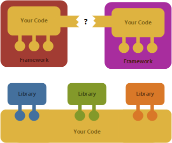

Library patterns Why frameworks are evil
This article is a follow up to my previous blog post about functional library design, but you do not need to read the previous one, because I'll focus on a different topic.
In the previous article, I wrote about a couple of principles that I find useful when designing libraries in a functional style. This follows from my experience with building F# libraries, but the ideas are quite general and can be useful in any programming language. Previously, I wrote how multiple layers of abstraction let you build libraries that make 80% of scenarios easy while still supporting the more interesting use cases.
In this article, I'll focus on two other points from the list - how to design composable libraries and how (and why) to avoid callbacks in library design. As the title suggests, this boils down to one thing - build libraries rather than frameworks!
Frameworks vs. Libraries

What is a difference between a framework and a library? The key difference is how you can use them and what kind of code you need to write.
-
Frameworks. When using a framework, the framework is in charge of running the system. It defines some extensibility points (interfaces) where you need to put your implementation.
-
Libraries. When using a library, you are in charge of running the system. The library defines some points through which you can access it (functions and types) and your code can call it as it needs.
You can see the difference in the diagram. A framework defines a structure that you have to fill, while library has some structure that you have to build around.
Of course, the separation between the two is not complete. Some components have aspects of both - you call it as a library, but it has some holes (e.g. an interface) that you have to fill.
Why are frameworks evil?
If you look at the diagram above, you can already see some of the problems with frameworks. In this section, I'd like to say a few things about three of the problems (before looking at ways to avoid those in the next section).
Frameworks do not compose
Perhaps the biggest and the most obvious problem with frameworks is that they cannot be composed. When you have two frameworks, they both force you to fill in a specific hole. But there is usually no way to fit one framework inside another (and it is usually not clear which one should be the one on the outside and which one should be on the inside).
With libraries, the situation is different. You are in control, so your program can easily call multiple libraries. This may have some cost - you may need to write more complex code around the library end-points - but it is usually possible.
Theoretical side note
I do not claim that there is any theoretical basis for this, but frameworks seem to be a bit like monads. When you're out of a monad, you can "get inside" using unit. Then you can do various things within the monad, but you can never "get out". Frameworks are similar.
It is quite well known that composing monads is hard (just like composing frameworks). If you have monads \(M_1\) and \(M_2\), you can compose them when you have an operation \(M_1 (M_2~\alpha) \rightarrow M_2 (M_1~\alpha)\), i.e. you can switch the order in which they are wrapped. Can something similar be defined for frameworks?
Frameworks are hard to explore
Another big problem with frameworks is that they are difficult to test and explore. In F#, it is very useful to load a library into F# Interactive and try running it with various inputs to see what the library does. For example you can use the web development library Suave to start a simple web server like this:
1: 2: 3: 4: 5: 6: 7: 8: 9: 10: |
|
The snippet loads the library and then calls startWebServer with a default configuration
and a function to handle requests (the function gets the query parameter who and prints
a greeting).
This kind of usage is extremely useful, because it lets the user experiment with the library
quickly. You can try calling startWebServer with different kinds of parameters and see what
it does (or, for other functions, see what it returns).
Theoretical side note
The difference between libraries and frameworks is pretty much the same as the difference between calling a function and having to provide a function as an argument:
\[\tag{library} lib : \tau_1 \rightarrow \tau_2\]
\[\tag{framework} fwk : (\sigma_2 \rightarrow \sigma_1) \rightarrow unit\]
In the library case, you need to create a \(\tau_1\) value so that you can call the \(lib\) function. Sometimes, the library gives you other functions that create \(\tau_1\) (in which case, you just need to find the first function of the chain to call). When writing code interactively, you can try to create various \(\tau_1\) values, run the function and see what it returns. This gives you an easy way to explore how the library behaves (and how to call it to get what you need). It also makes code that uses libraries easy to test.
In the framework case, the situation is more difficult. You have to write a function that accepts \(\sigma_2\) and produces \(\sigma_1\). The first problem is that you do not quite know what \(\sigma_2\) value are you going to get in different cases. In a perfect world "invalid values are not representable", but in reality, you want to start writing code that handles the most common cases first. Similarly, it is hard to understand (and explore) what kind of \(\sigma_1\) values you should produce to get the behaviour you want.
Now, if you look back at my Suave example, you might be wondering whether this is a library (we call a function)
or a framework (we specify a function that is called). In fact, the above example demonstrates both aspects.
As I'll say later, this instance of "framework" structure is not actually a bad thing (see the sections
on callbacks and async below).
Frameworks shape how you code
The next problem with frameworks is that they control the structure of your code. The typical example of this is when you are using a framework that requires you to inherit from some abstract base class and implement specific methods. For example the Game class in the XNA Framework looks something like this (I know that XNA is dead, but the pattern is used in other similar frameworks):
1: 2: 3: 4: 5: |
|
In Initialize, you are supposed to load any resources that your game might need; Update is called
repeatedly to calculate the next state and Draw is called when the screen needs to be updated. The
interface is pretty much designed to an imperative programming model, so you'll end up writing something
like the next snippet. Here, we're writing a silly Mario game where Mario just slowly walks to the right:
1: 2: 3: 4: 5: 6: 7: 8: 9: 10: 11: 12: |
|
The structure of the framework does not make it particularly easy to write the code in a nice way. Here,
I just did the most direct possible implementation. The mutable field x represent Mario's location and
mario is an option<Image> value for storing the resource.
You might say that this would be nicer in C# (e.g. I had to use option value because all F# fields have
to be initialized), but that is only true if you ignore all checking. The fact that we use option value
is actually making the code safer (because we cannot accidentally use mario in Draw if it was not
initialized). Or does the framework guaratnee that Initialize will be called before Draw? Well, how
are we supposed to know that?
How to avoid framework smells
I hope I convinced you that you should avoid building frameworks and create libraries instead. But I did not give any concrete tips how to do that. In the rest of the article, I look at a couple of concrete points.
Support interactive exploration
Even if you're not writing your library in F#, you should use F# Interactive to be able to call it interactively! F# is not just great for documenting your library, but writing an interactive script is a great way to make sure that your library is easy to call (if you're on the .NET platform, the other option is LINQPad).
To give two examples of what I mean, the following snippet shows how you can use the F# Formatting library to turn a folder with documentation containing F# Script files and Markdown documents into HTML, or how to process a single file:
1: 2: 3: 4: 5: 6: 7: 8: 9: |
|
The idea is that you just need to reference the library, open the namespace and find the Literate
type as the entry-point. Once you have that, you can use "." and see what is available!
I think all good libraries should support this kind of usage. As another example, let's look at
FunScript, which translates F# code to JavaScript. Typically, you'd use
this as part of some web framework, but it works just fine without that too. The following generates
JavaScript for simple async loop that increments the number in the page <title> every second:
1: 2: 3: 4: 5: 6: 7: 8: 9: 10: 11: |
|
Again, we just reference the library (this time, we also reference bindings for DOM) and then we
call one function - the compile function takes an F# quotation. Once you discover it, you can
experiment with what kind of things it can handle! The above demo shows a nice support for the
F# async { .. } and for bindings that let you access the DOM.
Use only simple callbacks
When I talked about frameworks in the theoretical side note above, I said that framework is, in principle, anything that accepts a function as an argument. So, am I saying that you should not use higher-order functions? Of course not!
Compare the following two simple snippets - the first one uses the standard list processing functions and the second one reads some input (using the first function), validates it and then processes it (using the second function):
1: 2: 3: 4: 5: 6: 7: 8: 9: 10: |
|
There are two differences between the first and second example. In case of list functions, you always specify just a single function as an argument. Furthermore, the functions should never be stateful.
In the second case, we are specifying two functions. To me, this is a sign that the function may
be more complicated than it needs to be. Secondly, readAndProcess requires us to return string
state from the first function and then take string as the input of the second function. This is
another potential problem. What if we needed to pass some other state from the first function to
the second one?
I'm obviously looking at a simplified case here, but let's look what might be going on inside
readAndProcess. The function might be handling some exceptions and checking that the input
is valid before calling the second argument:
1: 2: 3: 4: 5: 6: |
|
How can we improve this abstraction? First of all, the function really serves two purposes. First, it handles exceptions (in a silly way, but this is a toy sample). Second, it validates the input. We can split it into two functions:
1: 2: 3: 4: 5: |
|
Now, validateInput became just an ordinary function that returns Some if the input was valid.
The ignoreIOErrors function still takes a function as an argument - in this case, it makes sense,
because exception handling is a typical example of the Hole in the Middle pattern.
Using the new functions, we can write:
1: 2: 3: 4: |
|
If you try, you can still fit this on 3 lines, but the code is a bit longer and a bit more explicit.
However, I think that is actually a benefit, because you can see what is going on (and you can start
by calling validateInput interactively!) Also, if you like the readAndProcess function better, that's
fine - you can easily define it using the two above functions (but not the other way round!) So, your
library can provide multiple levels of abstraction as discussed in my earlier article.
But providing only the higher-level abstraction would be limiting.
To summarize, passing functions as arguments is not necessarily wrong, but be careful. If a function takes more than one function as an argument, it might not be the best low-level abstraction. If the functions passed as arguments need to share and pass around some state, then you should definitely provide an alternative (in case the "default" state passing is not what the caller needs).
Inverting callbacks with events and async
When discussing how frameworks shape your code, I used a simple game engine as an example. What could be done differently so that we do not need to use mutable fields and implement a specific class? In F#, we can use asynchronous workflows and event-based programming model instead.
This is more tricky for languages that do not have anything similar to computation
expressions (or iterators that can be used to fake this),
but C# supports await, F# has computation expressions, Haskell has the do notation and in
Python you can probably misuse generators.
The idea is that rather than writing virtual methods that need to be implemented, we'll expose
events that are triggered when the operation needs to be done. So, the interface for our Game
might look like this:
1: 2: 3: 4: |
|
Using F# async, we can now write the code differently. Going back to the original idea of frameworks vs.
libraries, we can write it so that we are in control what is going on! The following first initializes
the resources and the Game object and then it implements a loop (using recursive async blocks) that
waits for either Update or Draw event using the AwaitObservable
method:
1: 2: 3: 4: 5: 6: 7: 8: 9: 10: 11: 12: 13: 14: 15: 16: 17: 18: 19: |
|
We cannot be fully in control, because we don't know when the system calls us to update the game state and when it calls us to redraw the screen. But we can be in control when it comes to initializing the resources, checking when the game is running and waiting for one or the other event.
Using async { .. } is the key here. We can use AwaitObservable to say "resume
the computation when either Update or Draw is required". When the event happens,
we preform the required action (update state on line 12 or draw Mario on line 15)
and then continue. The nice thing is that you can easily extend this into a more
complex logic - for a nice example, see Phil Trelford's Fractal Zoom.
The other option with similar properties would be to use F# agents,
which give you similar control over the logic.
So, we are now in control, but have we really gained much? If you're new to F#, then you'll no doubt find the above code confusing. The main thing is that, by reversing the control, we can now easily write our own abstractions, which leads to the last point...
Use multiple levels of abstraction
As discussed in the previous blog post, a
library should provide multiple layers of abstraction. The Game type that I used
in the previous snippet is a low-level abstraction - it is useful if you want to build
something more sophisticated and it gives you all the control you need. But most of
the time, you may actually want to write the game just as a pair of "draw" and "update"
functions.
This can easily be done, because we can just take the previous code snippet and extract several parts into arguments:
1: 2: 3: 4: 5: 6: 7: 8: 9: 10: 11: |
|
The startGame abstraction takes two functions as arguments together with an initial state.
The update function updates the state and the draw function draws the state using the
specified DrawingContext. Using these, we can now write our Mario sample in just 4 lines:
1: 2: 3: 4: |
|
If you read the whole blog post, then you may be wondering whether I'm contradicting myself here! Didn't I previously write that higher-order functions that take multiple functions (especially when they share state) are evil frameworks? You're right, I said that! But let me clarify this:
It is fine to have easy-to-use operation that takes a couple of other functions as a high-level abstraction, but there should be a simple and more explicit alternative!
You can take the above 4 lines, look at the definition of startGame and turn them into the
14 lines of code we've seen earlier (excluding comments). So, you should be able to get the control
by taking one (not very deep) step under the cover. This is in contrast with building a fragile
scaffolding on top of a poorly designed library that is sometimes needed if you want to write
elegant code.
Design composable libraries
As I mentioned before, one of the main reasons why you should design libraries rather than frameworks is that libraries can be composed. If you are in control, you can choose which libraries to use for which part of a problem. This might not always be easy, but with libraries, you at least have a chance!
I think there are no general rules on how to design libraries that compose well - perhaps one important point is that your types need to expose all important information that other libraries (for similar purpose) would need if they wanted to create a similar data structure.
A good example here is FsLab, which is a package that brings together a number of data-science libraries for F# (including Deedle, Math.NET Numerics and others). The FsLab package comes with a single script that links a number of other libraries together (you can see the source code here).
Two simple examples from the file are functions for converting from matrix to frame (Matrix.toFrame)
and the other way round (Frame.toMatrix):
1: 2: 3: 4: 5: 6: 7: |
|
The solution here is quite simple, because both Deedle frame and Math.NET matrices can be converted to/from a 2D array and so we just need to go from one to the other through an array. This looks very simple, but I think that's the point - no matter what your library does, you should give the user all the power they need to combine your library with others (or replace some parts of it, if they don't like them!)
Summary
In this article, I looked at a number of functional library design principles. This is a second article in this mini-series - the first one contains a longer introduction with a list of principles and then discusses layers of abstraction. In this article, I talked about composability and avoiding callbacks. The two are closely related, because heavily relying on callbacks breaks composability. I also related these two terms to libraries and frameworks, because frameworks are, by design, non-composable.
To end on a lighter note, you can find frameworks not just in software, but also in ordinary life. If you buy package holidays, you're buying a framework - they transport you to some place, put you in a hotel, feed you and your activities have to fit into the shape provided by the framework (say, go into the pool and swim there). If you travel independently, you are composing libraries. You have to book your flights, find your accommodation and arrange your program (all using different libraries). It is more work, but you are in control - and you can arrange things exactly the way you need.
With traveling, I can see why some people prefer package holidays, but in software development, there is no excuse for building frameworks!
Published: Tuesday, 3 March 2015, 5:13 PM
Author: Tomas Petricek
Typos: Send me a pull request!
Tags: f#, open source, functional programming